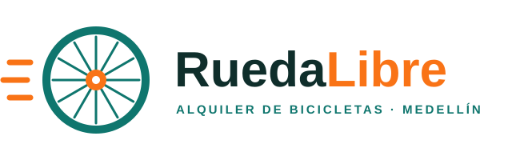

Alquiler de bicicletas
Nos encargamos de darte la indumentaria necesaria para tus recorridos por Medellin: incluye casco y candado.


¡Bienvenidos a Rueda Libre! Alquilamos bicicletas y organizamos recorridos guiados. Mira dónde estamos.
Somos una empresa dedicada a tus recorridos en bicicleta.
Nos encargamos de darte la indumentaria necesaria para tus recorridos por Medellin: incluye casco y candado.
Los recorridos son guiados y solo son en Medellin. Mira los recorridos y sus precios.
Los servicios de reparación son solo básicos.